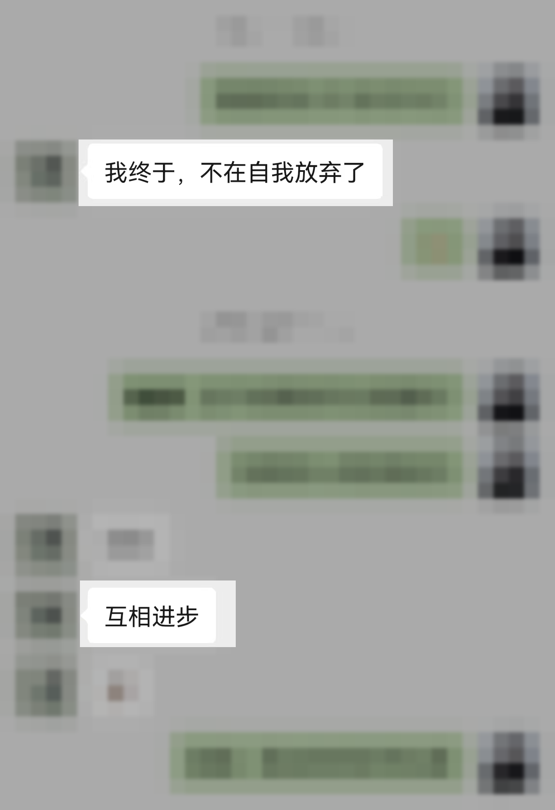

CASE 001 · 个人成长
工作和感情都不顺，她开始觉得人生没有希望了。
真正让人痛苦的，常常不只是事情没有做好，而是每次受挫以后，都忍不住把结论变成：“是不是我这个人不值得？”
01 / 你是否也被这些念头困住
事情出了问题，
最后总变成否定自己。
- 工作或关系一受挫，就觉得自己什么都做不好
- 很想改变，却因为害怕失败迟迟不敢开始
- 不断从别人的态度里确认自己有没有价值
- 生活越来越枯竭，甚至觉得未来没有希望
02 / 渡月如何帮助这类人
把“这件事没做好”，
和“我不值得”分开。
我会陪你看见自我否定是怎样形成的，再把现实问题、关系感受和自我价值一层层分开。不是用鼓励压过痛苦，而是帮助你重新形成判断和行动。
- 识别一受挫就全盘否定自己的循环
- 在恐惧里仍然完成一个真实行动
- 把价值感慢慢拿回自己手里

03 / 更多细节不公开
公开到足以让你认出自己的处境，就够了。
具体工作、感情经历、成长背景和咨询过程不会成为供人围观的故事。
START FROM THE REAL PROBLEM